器材库 > APS及其以下画幅可换镜头数码相机 > α5100
规格总览
产品类型
APS画幅可换镜头数码相机
发布日期
2014-08-18
厂家推荐价格
4,499.00 （人民币）
影像规格
影像传感器
Exmor APS HD CMOS
影像传感器尺寸
23.5×15.6mm
有效像素
2430万
色彩空间
sRGB，Adobe RGB 兼容特丽魅彩色彩技术
最大解像度
6000 x 4000
画幅比
3:2, 16:9
短片尺寸
1920×1080（50p）
短片格式
AVI, MP4, XAVC S
防抖系统
OSS镜头防抖系统
镜头和对焦
镜头卡口
Sony E
对焦点
179点（相位检测自动对焦）/25 点（对比检测自动对焦）
对焦模式
广域 / 区 / 中间 / 自由点（L，M，S）/ 锁定AF
眼控对焦
有
AF辅助灯
有
手动对焦
支持
曝光控制
测光系统
1200区测光
测光范围
EV-1至EV20 （ISO100，F2.0镜头）EV
拍摄模式
智能自动/增强自动/程序自动/光圈优先/快门优先/手动曝光/动态影像/扫描全景（2D）/场景选择
快门类型
电子控制，纵走式，焦平面快门
快门速度
1/4000秒-30秒，B门
闪光同步速度
1/160秒
曝光补偿
±3EV
ISO感光度
100, 25600
连拍
6
闪光灯
内置闪光灯
弹出式
闪光模式
自动, 强制闪光, 禁止闪光, 后帘同步, 低速同步
闪光指数
GN4
闪光补偿
±2EV以1/3EV级调整
取景器/显示屏
LCD类型
彩色TFT LCD
LCD像素
约92万像素万
视野率
100%
LCD特性
触摸屏, 翻转屏
亮度调节级数
手动（±2.0级）/晴朗天气
Live View
有
文件输入/输出
存储卡
MS/MS PRO记忆棒, SD/SDHC
数据接口
USB2.0
视频/音频接口
Micro HDMI 接口
无线功能
Wi-Fi, NFC
电源
电池
可重复充电电池NP-FW50（随机附送）
续航能力
约 400张（LCD，CIPA标准）
机身规格
颜色
黑色, 白色, 棕色
尺寸
约 109.6 x 62.8 x 35.7mm
重量
（含电池）224g
其它
配件端口
热靴, 脚架螺丝孔
工作温度
0-40℃
rica2015-03-11 19:424.38 分
操作性 4.00功能性 4.50美观性 4.50趣味性 5.00耐用性 4.00性价比 5.00解像力 4.00色彩还原 4.00
kaddee2014-11-13 16:354.38 分
操作性 3.50功能性 4.50美观性 4.00趣味性 4.50耐用性 4.00性价比 5.00解像力 5.00色彩还原 4.50
产品图 / 样片
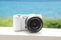
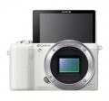
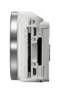
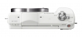
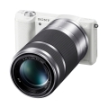
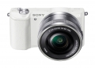
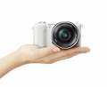
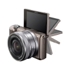
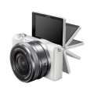
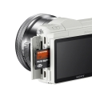
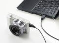
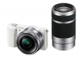
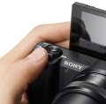
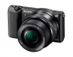
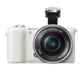
索尼a5100产品图
评测 / 相关文章
- 详细内容 （存档）
- 入门机身旗舰芯 索尼α5100评测 （存档）
- ［试用］小巧专业的微单 α5100随行随拍 （存档）
- ［资讯］索尼新一代微单α5100官方样张欣赏 （存档）
- ［资讯］索尼发布微单数码相机α5100 （存档）
相关文章
- ［试用］入门机身旗舰芯 索尼α5100评测 （存档）
- ［试用］小巧专业的微单 α5100随行随拍 （存档）
- ［资讯］索尼新一代微单α5100官方样张欣赏 （存档）
- ［资讯］索尼a5100 （存档）
- ［资讯］索尼发布微单数码相机α5100 （存档）
- ［资讯］索尼发布相机出货短缺公告 （原站已下线）
- ［资讯］小身材也有大能量 索尼微单选购全攻略 （存档）
- ［资讯］优化新镜头 索尼公布A7系列固件升级 （原站已下线）